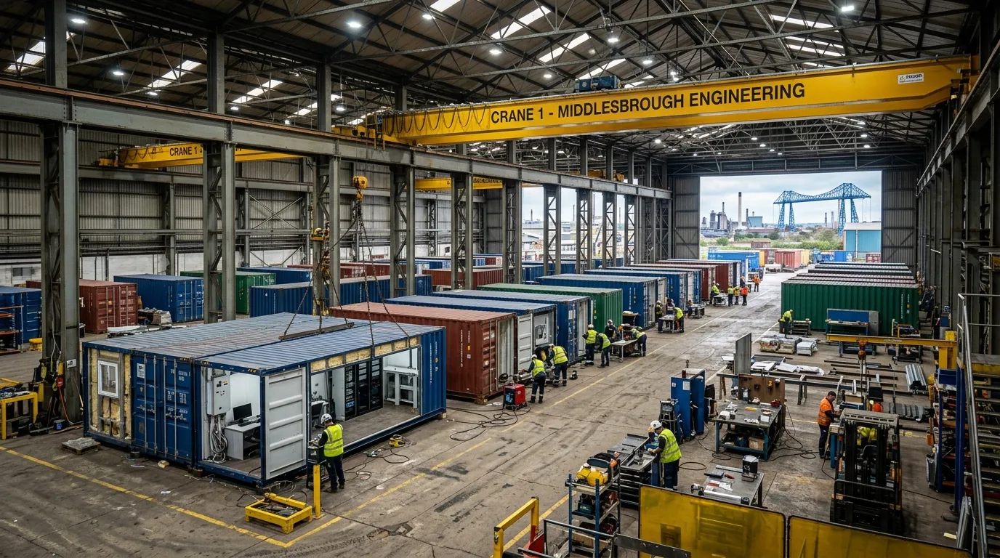
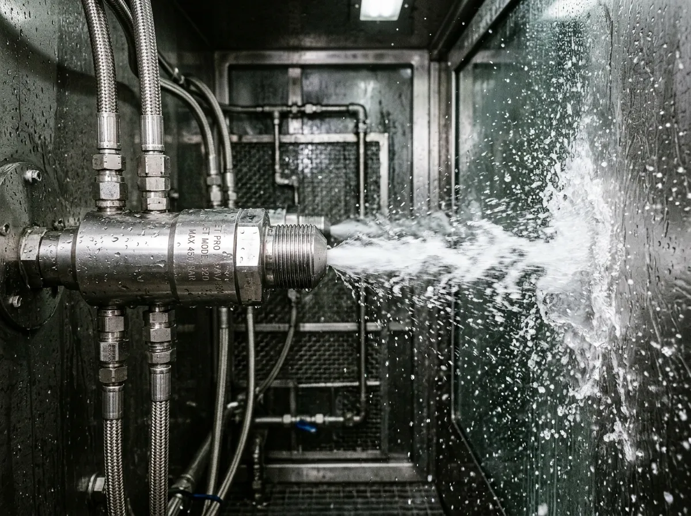

TENDONFORGE
TENDONFORGE
STANDARDISED CORTEN STEEL MODULAR RECOVERY UNITS.
Heavy-duty hardware shells housing medical-grade physical therapy automation.
The TendonForge modular fleet consists of pre-commissioned twenty-foot and forty-foot ISO high-cube freight containers, internally retrofitted with clinical-grade hydrotherapy and cryo-remobilization hardware. Every pod is fabricated at Hangar 8, Cargo Fleet Works in Middlesbrough, undergoing rigorous operational load testing before dispatch. Designed to withstand the harshest maritime dockyards and remote civil tunneling camps, the Corten steel outer shells provide absolute protection against harsh coastal salinity and extreme site weather, while maintaining a sterile, high-tech clinical environment within.

01 // THE TF-20 MUSCULOSKELETAL POD
The TF-20 is our flagship single-operator high-intensity unit, engineered for aggressive treatment of acute forearm, shoulder, and knee tendon strain in specialized ironworkers and drill operators. Housed within a standard twenty-foot container footprint, the unit maximizes spatial efficiency while delivering unparalleled deep-tissue therapy.
At the core of the TF-20 is a proprietary stainless-steel hydro-couch equipped with six-bar pulsatile hydro-jets. These aerated jets deliver precise percussive force directly into inflamed tendon sheaths, forcibly breaking down early-stage scar tissue before it calcifies. The system operates on a closed-loop UV-sterilized water circuit, eliminating the need for complex site plumbing modifications or constant water resupply.
Further enhancing the structural realignment, the TF-20 features automated pneumatic ankle-traction cuffs. As the operator undergoes hydro-massage, the traction cuffs apply precisely calculated tensile loads—measured in kilonewtons via integrated biometric force plates beneath the primary couch—to gently distract the lower lumbar and patellar joints, relieving transverse shear stress and decompressing the spinal column after heavy lifting shifts.

02 // THE TF-40 MULTI-OPERATOR SHIFT POD
Engineered for massive infrastructure projects, including 100+ person tunneling ventures and heavy offshore fabrication yards. The TF-40 effectively doubles the operational footprint by utilizing a forty-foot High-Cube ISO container, maximizing shift-changeover throughput without sacrificing clinical efficacy.
High-Throughput Processing
Capable of processing sixteen workers per hour, the TF-40 aligns perfectly with rapid shift changeovers. It prevents dangerous bottlenecks at the site gates while ensuring that every heavy-labor operator receives mandatory structural tendon maintenance before boarding transit off-site.
Dual Cryo-Valves
Equipped with twin independent -110°C electric cryo-chambers, the TF-40 allows simultaneous thermal shock treatments. By utilizing electrical refrigeration instead of consumable liquid nitrogen, the unit operates continuously on standard site power without hazardous gas deliveries or complex ventilation safety protocols.
Hyper-Oxygen Lounge
The interior features a dedicated four-person hyper-oxygen recovery bench. Utilizing integrated oxygen concentrators, this zone delivers 95% pure O2 to operators exhausted by subterranean tunneling environments, rapidly clearing lactic acid from muscle bellies and accelerating recovery kinetics.
03 // FREIGHT LOGISTICS & SITE REQUIREMENTS
Utilizes standard commercial HIAB transport. No oversized load permits required for the TF-20 or TF-40.
Operates entirely on a single 32A, 415V three-phase industrial connection, standard across all major civil construction sites.
Self-contained UV filtration loops recycle internal water. No trenching, mains supply, or drainage pipes required.
04 // MONTHLY LEASE & PROCUREMENT LEDGER
Transparent capital allocation for short-term projects and permanent industrial facility integration. The preventative reduction in lost-time injury (LTI) claims routinely offsets the operational expenditure of the pod lease within the first sixty days of deployment.
| Contract Tier | Hardware Unit | Cost Allocation | Inclusions |
|---|---|---|---|
| Project Deployment | TF-20 Pod | £4,800 / Month | Maintenance, bi-weekly UV filter replacement, biometric data telemetry portal. |
| Turnkey Fleet Contract | TF-40 Multi-Operator | £14,500 / Month | Priority crane dispatch, dedicated site technician, full 3-phase infrastructure hookup. |
| Capital Equipment Purchase | TF-20 Pod (Permanent) | £92,000 Outright | Full asset transfer to foundry/plant ledger, 5-year parts warranty, ISO certification pack. |
05 // DISPATCH REQUISITION
SITE PROFILE BRIEF
By submitting this form, you initiate a logistics evaluation from the Middlesbrough assembly yard. A technical surveyor will contact your site management team within four hours to verify 3-phase power availability, crane staging clearance, and expected workforce load before finalizing the delivery schedule.